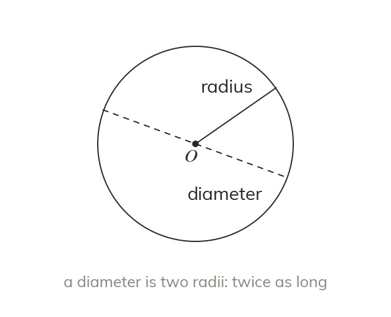

Centre, radius and diameter
Every point of a circle is the radius away from the centre. A diameter crosses through the centre. It is twice the radius.
Every point of a circle is the same distance from its centre, and that distance is the radius. A diameter is a line across the circle through the centre, twice the radius.